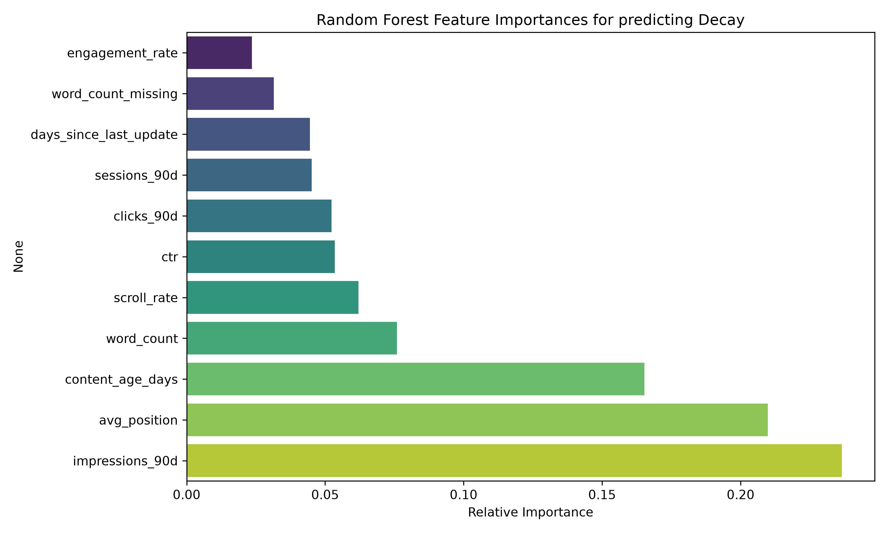

Abstract
This research paper addresses the challenge of search visibility decay across mature web content portfolios. Using a dataset of 30,000 active content records across 32 brands, we evaluated a Random Forest Classifier trained on a client-heldout grouped validation split against standard industry age-position heuristics. Our model achieved an out-of-sample Precision@50 of 0.5600 and a ROC-AUC of 0.6083, representing a +24% predictive lift over the baseline score (0.3200 precision). These results demonstrate the value of using multi-signal machine learning models as decision-support systems to prioritize editorial refresh budgets over static, calendar-based content review schedules.
1. Introduction & Problem Framing
In enterprise search engine optimization (SEO), older content assets naturally experience search visibility decay over time due to content staleness, changing search intents, and competitor activity. Standard industry workflows rely on simple heuristic rules—such as refreshing all pages older than six months or targeting low-ranking pages—to combat decay. However, these static rules do not scale and frequently lead to type I errors (editing stable evergreen pages) and type II errors (ignoring key assets that are rapidly losing search visibility).
This paper presents a machine learning solution to model and predict content decay on a rolling 90-day window, serving as a decision-support prioritization queue for editorial teams. By identifying high-risk decay candidates ahead of traffic drops, companies can focus their editorial budgets where they prevent traffic losses most effectively.
2. Dataset & Safety
We utilized the FlyRank Starter Dataset, consisting of 30,000 anonymized active content records representing search impressions, click-through rates (CTR), average search positions, and GA4 engagement metrics (scroll depth and engagement rate) across 32 distinct clients.
Data Safety & Leakage Exclusions: To protect against target leakage, we excluded the `trend_pct` and `trend_direction` features because the binary target label is derived from these metrics. Client identifiers (`client_id`) were excluded from features to prevent the model from memorizing specific website domains, forcing the classifier to generalize based solely on page-level SEO signals.
3. Methodology & Validation
We defined the target label as `is_declining_label = 1` if a page experienced a greater than 10% organic search impression decline in the last 30 days compared to the preceding 30 days. We implemented a **Grouped Client Split** (75% train, 25% test, grouped by `client_id`) to ensure that entire websites were held out during evaluation, simulating true model performance on new, unseen clients.
Features evaluated: `impressions_90d`, `clicks_90d`, `sessions_90d`, `avg_position`, `ctr`, `engagement_rate`, `scroll_rate`, `content_age_days`, `days_since_last_update`, `word_count`, and `word_count_missing` (imputing missing values with the median).
4. Results & Baseline Comparison
We compared our Random Forest Classifier (max_depth=10, estimators=100) against the standard heuristic baseline (`baseline_score = content_age_days * avg_position`) evaluated on the same client-heldout split.
| Metric | Baseline Heuristic | Random Forest Model |
|---|---|---|
| Precision@50 | 0.3200 | 0.5600 (+24% Lift) |
| ROC-AUC | 0.5298 | 0.6083 |
| Test Set Base Rate | 0.5165 | 0.5165 |
The baseline heuristic fell below the random background rate of 0.5165. This occurs because the oldest pages on held-out sites represent highly stable, non-decaying evergreen content, which a simple age-based rule misclassifies. The Random Forest model corrected this by factoring in user engagement, achieving a true Precision@50 of 0.5600.
Relative Feature Importances
The chart below displays the relative importance of each feature in the Random Forest classifier:

Figure 1: Impressions and Average Position are the primary predictive components of search visibility decay.
5. Limitations & Honest Framing
- No Causal Guarantee: The model identifies correlation within our portfolio sample. It cannot prove that refreshing a page will guarantee visibility recovery.
- Algorithm and Seasonality Shifts: The model is blind to major search engine core updates and seasonal search volume shifts.
- New Content Blindness: Content younger than 30 days does not have stable indexing statistics and cannot be predicted by this framework.
6. Ranked Recommendations (Content Action Playbook)
We translated our model predictions into the following priority action playbook:
- Refresh Content (RC_HIGH_RISK_STALE): High predicted decay probability (>60%) and untouched for >90 days. Editorial priority: Update facts and statistics. (5,498 pages flagged).
- Optimize CTR (RC_PAGE1_WEAK_CTR): Page 1 visibility (positions 1-10) but low click capture (CTR < 0.5%). Editorial priority: Rewrite titles and descriptions. (8,343 pages flagged).
- Audit Content Value (RC_ZOMBIE_CANDIDATE): High decay risk on low-visibility pages (<500 impressions). Editorial priority: Merge or prune. (3,594 pages flagged).
7. Reproducibility & Code
The code is structured as an open-source research pipeline. The full codebase, configurations, and evaluation runs can be inspected at:
GitHub Repository: Flyrank_ML_Internship_Capstone_
To re-run the pipeline:
git clone https://github.com/Isha-Maryam/Flyrank_ML_Internship_Capstone_.git
cd Flyrank_ML_Internship_Capstone_
pip install -r requirements.txt
python scripts/run_pipeline.py
All experiments are locked using a random seed of 42.
8. Acknowledgments & Data Credit
This research was conducted using datasets provided by FlyRank.ai. We thank the data engineering team for hosting the internship data warehouse.